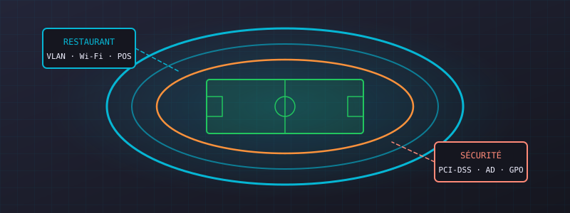

Réalisation n°1
Mise en œuvre d'une infrastructure réseau et système sécurisée pour le service restauration de StadiumCompany
Le restaurant de StadiumCompany a modernisé son système de prise de commande en utilisant des tablettes sans fil. L'enjeu principal est de permettre un accès sécurisé aux menus et au logiciel de caisse, tout en assurant une isolation stricte des flux de données pour respecter les exigences de sécurité et de conformité PCI-DSS.
CiscoActive DirectoryGPOWi-Fi (AIR-CAP3502I)